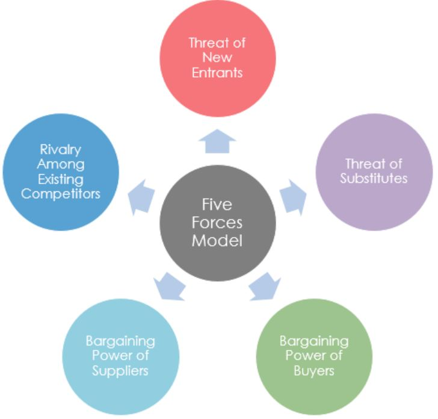

什麼是五力分析？
五力框架 (Five Force Fraemwork) 是分析企業競爭的工具。它從工業組織（IO）的經濟學中得出五個力量，它們決定了競爭強度，因此決定了一個行業的盈利能力的吸引力（或缺乏）。
邁克爾波特於1980年開發了五力模型。邁克爾波特的五力是一個強大的競爭分析工具，用以確定市場中主要的競爭影響力。
這是一個廣泛使用的業務模式，它指的是驅動一個公司在一個行業中的競爭地位的五個重要因素。通過考慮每個力量如何影響你，並通過確定每個力量的力量和方向，你可以快速評估這個位置的力量和你在這個行業中獲得持續利潤的能力。
因此，五力分析可以幫助您保持競爭力：
- 了解這五種力量的實力，你可以製定戰略，幫助他們的企業更具競爭力和盈利能力。
- 看看機遇，與其他參與者相比，您可以加強組織的地位，以減少競爭壓力並創造競爭優勢。
循序漸進的五力分析
波特的五力分析是項目規劃階段的重要工具。波特的五力分析強有力地假設，只有五種重要力量可以決定企業競爭力。使用以下三個步驟：
- 找出導致五種力量各自競爭壓力的不同因素：
- 誰是供應商？
- 誰是客戶？
- 什麼是替代產品？
- 進入這個行業很難嗎？
- 根據確定的因素，確定壓力是否為：
- 確定五力的實力是否有利於在行業中獲得有吸引力的利潤。使用五力模型可以幫助回答以下問題：
- 行業競爭狀態是否比“正常”更強？
- 鑑於競爭力，這個行業的公司能否期望獲得可觀的利潤？
- 競爭力是否足夠強大，足以破壞行業的盈利能力？
波特五部隊的組成部分
波特的五力分析包括以下幾個部分：
供應商討價還價的能力：它代表了供應商能夠影響價格的程度。當有很多供應商時，買家可以很容易地轉向競爭，因為供應商實際上不會影響行業的價格和行使控制權。
相反，當供應商數量相對較少時，他們可以推動價格上漲並且強大。因此，在以下情況下供應商議價能力較高：
- 市場被幾個大供應商征服。
- 沒有可用的替代產品。
- 供應商的客戶群是分散的，他們的談判能力很低。
- 從一個供應商到另一個供應商的高轉換成
供應商整合前景的可能性，以獲得更高的利潤和利潤率。
客戶討價還價的能力：客戶討價還價的能力在於客戶影響產品和服務定價和質量的能力。當特定產品或服務的消費者數量很少時，他們有更多的能力影響定價和質量。當大部分買家可以輕鬆切換到不同的產品或服務時，情況也是如此。當消費者購買少量產品時，討價還價的能力很低。影響這種力量的因素是買家集中度，對產品的依賴程度，總討價還價槓桿，隨時可用的採購信息，替代產品，價格敏感度和總交易量。
因此，在以下情況下，客戶討價還價的能力很高：
- 客戶購買大量產品。
- 供應行業由若干小型經營者組成。
- 供應行業受到高昂的固定成本控制。
- 該產品有替代品。開關產品很簡單。
- 開關產品不會導致高成本。
- 客戶對價格敏感。客戶可以自己製造產品。
新進入者的威脅：當進入一個行業的障礙較高時，由於成本高昂且競爭激烈，新企業難以進入市場。高度集中的行業，如汽車或健康保險，可以宣稱具有競爭優勢，因為它們的產品不是同質的，而且可以維持有利的地位。
另一方面，當進入一個行業的障礙較低時，新企業可以利用規模經濟或關鍵技術。進入的可能障礙可能包括：
- 規模經濟。較高的初始投資成本或固定成本
- 現有球員的成本優勢。
- 品牌忠誠度。
- 知識產權，如許可證等
- 重要資源短缺。
- 原材料的獲取受現有參與者的控制。
- 分配手段由現有參與者控制。
- 現有玩家擁有安全的客戶關係。為客戶提高轉換成本。
- 立法和政府行為。
替代品的威脅：當顧客可以在許多替代產品或服務中進行選擇時，企業就是價格接受者，即買方決定價格，從而降低企業的權力。
相反，當企業遵循產品差異化戰略時，它可以決定買家轉向競爭的能力。這種威脅是由以下事情決定的：
- 客戶的品牌可靠性。
- 確保客戶關係。
- 為客戶轉換成本。
- 替代品表現的相對價格。
- 最新的趨勢。
競爭對手：在競爭激烈的行業中，企業可以很少或根本不控製商品和服務的價格。
相反，當行業是壟斷競爭或壟斷時，企業可以完全控製商品和服務的價格。在以下情況下，現有參與者之間的競爭可能很高：
- 球員是相同的大小。
- 玩家有類似的策略。
- 玩家和他們的產品之間很少或根本沒有區別導致價格競爭。
- 市場增長率低。
- 退出障礙很高。
這些力量可以整齊排列在一個如下圖所示的圖表中。

競爭優勢
你為什麼要買耐克而不是阿迪達斯？答案在於競爭優勢。競爭優勢是公司及其產品的一系列獨特功能，被目標市場視為重要且優於競爭對手。這是品牌忠誠背後的原因，以及為什麼您更喜歡一種產品或服務。
公司實際可以使用三種不同類型的競爭優勢。它們是價格，產品差異化和成本。
價錢
價格是影響公司利潤的最有影響力的因素之一。
公司可以通過降低和提高產品價格來獲得優勢，但通常會帶來短期效益。因為從長遠來看，許多其他因素如質量，替代品也會產生影響。
產品差異化
“當產品或服務為其客戶提供有價值的獨特產品時”
在經濟學和市場營銷中，產品差異化（或簡稱差異化）是區分產品或服務與其他產品或服務的過程，以使其對特定目標市場更具吸引力。一般來說，競爭激烈或競爭溫和的行業將擁有同類產品。公司產品的差異無法看出。
因此，為了獲得優勢，公司可以將其產品與競爭對手的產品區分開來。這將幫助他們獲得優勢。
成本
產品成本也是決定組織整體盈利能力的一個因素。如果產品的成本高於競爭對手的產品，那麼公司賺取的利潤就會減少。
為了發揮優勢，企業可以嘗試降低成本並採用有效的生產技術，這樣企業的利潤就會增加。